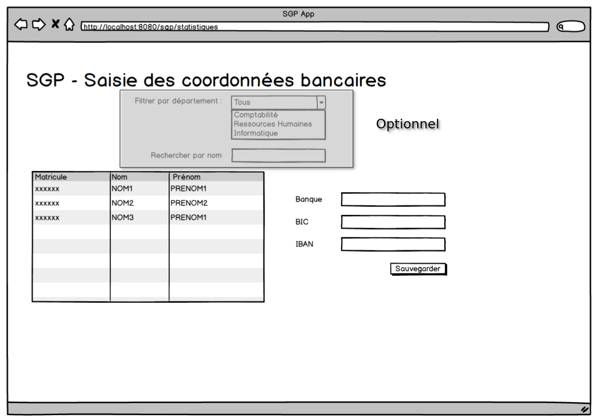

TP Web App
Application Saisie de coordonnées bancaires
Les utilisateurs de l'application SGP ont souvent, après chaque série de recrutement, besoin de saisir massivement des coordonnées bancaires.
Nous allons créer une application qui permet d'effectuer une saisie rapide des coordonnées bancaires.
Dépôt Github
- Créer un fork du projet
scb-web.
Outillage
- Si ce n'est pas déjà fait, installer la dernière version LTS de NodeJS (https://nodejs.org/).
- Pour vérifier si NodeJS est installé, tester la commande node comme suit :
node -v
npm -v
- Installer le serveur live-server :
npm i -g live-server
- Démarrer un serveur web. Pour cela, se rendre dans le répertoire scb-web et lancer la commande :
live-server
Si jamais vous souhaitez changer le port du serveur :
live-server --port=NUMERO_PORT
Application Web
- Créer une application indépendante (HTML / JS) et Bootstrap (maquette ci-dessous).
/scb-web
index.html
app.js
/bootstrap
...

Implémenter le comportement suivant :
- A l'initialisation de l'application, la liste des collaborateurs est affichée.
- Le bouton sauvegarder permet d'enregistrer les modifications.
- Si une erreur s'est produite pendant la communication avec l'API Backend, afficher un message d'erreur.
- (Optionnel) Il est possible de filtrer la liste des collaborateurs par nom ou par département.
Déployer l'application avec les
Github Pages.Mettre à jour le lien dans la pull request.